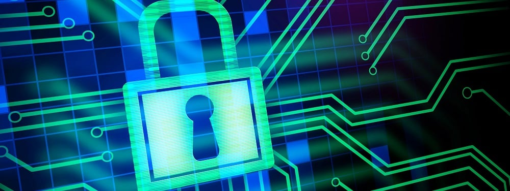

La Cyber Sécurité, est-ce important?

La cyber sécurité est considérée très importante dans notre âge moderne parce que nous vivons dans une époque où nous pouvons perdre une grande somme d'argent en étant attaqué par des pirates en ligne. Les méthodes utilisées par ces pirates ont évoluées pendant les années et ceux-ci se démarquent en avançant leurs attaques vers des compagnies larges pour une plus grande somme d'argent.
Il existe plusieurs méthodes d'attaques en lignes comme les virus, le ver informatique, les chevaux de Troie et des rootkits. Ceux-ci peuvent se propager facilement à travers l'intéraction d'un email infecté par un programme malicieux pour après laisser le pirate demander une somme d'argent à l'utilisateur pour enlever ce programme, ceci étant nommé un ransomware.
La question se demande, comment peut-on se protéger contre ces attaques? Nous pouvons installer des anti-virus, mettre à jours notre système d'exploitation et même utiliser un VPN pour prévenir les attaques contre nos données storées dans notre ordinateur personnel.